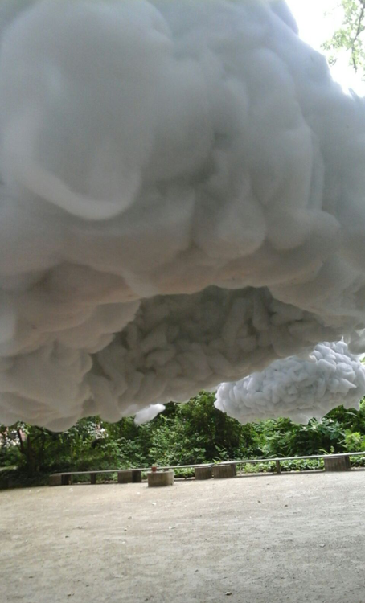
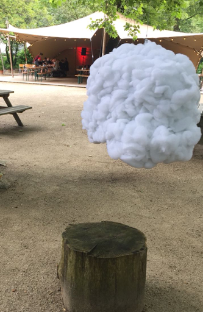
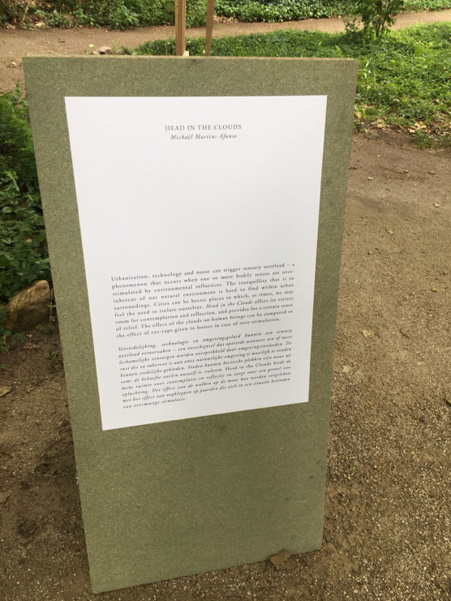
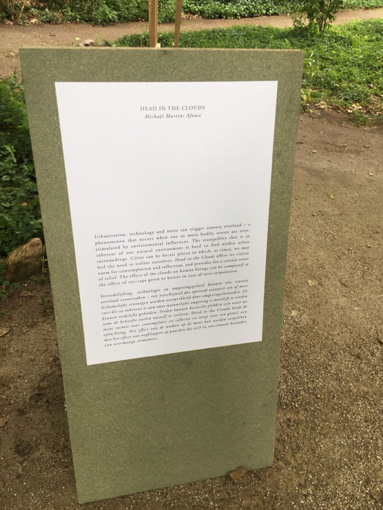

Robotanica
Head in the Clouds
Voor de excursie moesten we naar Amsterdam gaan voor de Robotanica tentoonstelling. Deze tentoonstelling ging over het verkennen van een nieuwe wildernis van technologische soorten. Het laat zien hoe robotica een rol speelt of zich zal manifesteren binnen onze veranderde ecologie. Hier werden dan ook verschillende robotica projecten tentoongesteld die later een rol zouden kunnen spelen in onze omgeving. Het project dat mij het meest aansprak was het project met de naam ‘Head in the clouds’. Dit is gemaakt door Mickaël Martins Afonso. De naam zegt precies wat de bedoeling achter is, je stopt letterlijk je hoofd in de wolken. Het idee hierachter is dat het voor rust moet zorgen die binnen stedelijke gebieden moeilijk te vinden zijn. Verstedelijking, technologie en omgevingsgeluiden kunnen een sensory overload veroorzaken, dit is een verschijnsel dat optreedt wanneer een of meer lichamelijke zintuigen worden overprikkeld door omgevingsinvloeden. Het zijn dan ook zulke momenten dat we onszelf graag willen isoleren en dat is dan ook wat Head in the Clouds aanbiedt. Het geeft de mens ruimte voor contemplatie en reflectie en zorgt voor een gevoel van opluchting. Op het moment dat ze hun hoofd in de wolken doen komen ze in een donkere en afgesloten ruimte terecht en krijgen ze op deze manier het gevoel dat ze afgesloten worden van de rest van de wereld. Dit heeft een soortgelijk effect als de oogkleppen die bij een paard geplaatst wordt wanneer het zich in een situatie bevindt van overmatige stimulatie.
Het eerste wat mijn aandacht had getrokken toen ik bij de tentoonstelling aankwam was dit project. Het sprong erg uit tussen alle andere projecten. Niet alleen het uiterlijk, maar ook het gevoel die ik erbij kreeg. Na gelezen te hebben waar het precies voor bedoeld was, ben ik er nog meer geïnteresseerd in geraakt. Er is duidelijk goed nagedacht over wat het best zo een rustgevend afgesloten gevoel kan creëren. Wanneer ik denk aan een wolk denk ik aan zacht en rust, doordat het moeilijk te bereiken is zo hoog in de lucht en er dus niemand bij kan. Het idee dat je even weg kan van alle herrie en drukte door alleen maar je hoofd in een van de wolken te doen, lijkt me geweldig. Ik zou zelf wel zo een wolk in mijn tuin willen hebben.
Reflectie
Ik had voor deze excursie niet echt een idee over wat robotica precies inhoudt. Het enige beeld wat ik ervan had is dat het om robots gaat die in de samenleving toegepast kunnen worden. Maar hoe dat precies gedaan wordt en in welke situaties dit toegepast zou kunnen worden wist ik niet precies en had ik eerlijk gezegd nooit echt over nagedacht. De verschillende voorbeelden die op de tentoonstelling te zien waren, hebben dit veranderd. Wat ik wel goed vond aan deze excursie was dat er meerdere projecten aanwezig waren en dat ze allemaal op verschillende manier in de samenleving toegepast kunnen worden. Wat ik wat minder vond is dat hun werking niet altijd even duidelijk was. Ik had graag willen zien hoe ze precies werken en ook zou het duidelijker geweest zijn als er iemand bij het project stond die er wat meer over kon vertellen.
 
